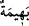
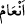
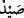

mendûbiyet mânâsına hamledersek dînen yapılması güzel olan şeyleri de şâmil olur.
Ebû Hanîfe (rahimehullah) bu âyeti, bayram günü oruç tutmayı ya da çocuğunu kurban
etmeyi nezreden kimse hakkında delil getirmiştir. Böyle bir kimse orucunu, oruç
tutmanın helâl olduğu bir günde tutar. Çocuğunu kurban etmeyi adayan kimsenin de,
kurban etmesi helâl olan ve kendisini Allah’a yaklaştıracak olan bir şeyi (hayvanı)
boğazlaması gerekir. Çünkü herhangi bir şeye ahd eden ve onu kendisine farz kılan
kişinin, yapılması sahih olan bir şekilde ahdini yerine getirmesi vâcibdir.
Ebû Hanîfe yine bu âyeti, iki talak arasını birleştirmenin haramlığına delil getirmiştir.
Çünkü nikâh bir akittir. Onun bozulmasının haram olması gerekir. Çünkü, Cenab-ı Hak
“Akitleri yerine getiriniz.” buyurmuştur. Ebû Hanîfe, bir talak hakkında icmâen sâbit
olan âyetin umûmî hükmü ile amel etmemiştir. Onun dışındakilerde ise temel prensibe
göre hareket etmiştir.
Hadiste şöyle buyurulmuştur: “Bir toplumda hile ve sahtekârlık başgösterirse Allah
onların kalplerine korku salar. Bir cemiyette zina yaygınlaşırsa, orada ölümler artar.
Bir kavim ölçü ve tartıyı eksik tutarsa orada rızık darlığı başgösterir. Bir kavimde
adâletsizlik yaygınlaşırsa orada kanlı hâdiseler artar. Ve bir millet ahdini bozarsa
Allah onlara düşmanı musallat eder.”[231]
İyilik eden iyilik bulur
Yapılan iyilik ve kötülüğün karşılığı bulunur
Bundan sonra Cenab-ı Hak mü’minlere, kendilerine vâcib kıldığı mükellefiyetleri
yerine getirmelerini emrediyor ve onları sorumlu tuttuğu emirleri îzâha girişiyor.
Yiyeceklerden helâl ve haram olanları zikretmeye başlıyor ve şöyle buyuruyor:
“Hayvanlar sizin için helâl kılındı.” “__WORD__ (hayvan)”, dört ayaklı hayvanların genel
adıdır. Onun “
” yani hayvanlar kelimesine izafe olunması ise onu açıklamak içindir.
İpekli elbise çeşitlerinin erkeklere haram kılındığını anlatırken sâdece “ipek” lafzı
bunu ifade ettiği halde “ipek elbise” denilmesi gibi. Cinse delâlet etmesi için, “
”
kelimesi müfret (tekil) olarak zikredilmiştir. Yani size dört ayaklı hayvanlardan deve,
sığır, koyun ve keçinin etini yemek helâl kılındı, demektir.
Bu dört cins hayvandan her birinin erkeği dişisi ile, dişisi de erkeği ile birlikte bir
çifttir. Böylece bu dört çeşit hayvan, erkeği ve dişisiyle sekiz çeşit olur. Bunlar;
koyundan iki, keçiden iki, deveden iki ve sığırdan ikidir. Bu konu, En’am sûresinde
geniş olarak açıklanmıştır.
“Behîme” kelimesi, “en’âm” kelimesinden daha geneldir. Çünkü “en’am”, yukarıda
saydığımız koyun, keçi, deve ve sığırın dışındakileri şâmil değildir. Onları içine almaz.
Ancak, geyik, yaban sığırı ve benzerleri de “en’âm”a dâhil edilmiştir.
“İhramlı iken avlanmayı helâl saymamak şartıyla” “
”, mastar mânâsınadır ve
“karada avlanmak” demektir. Ya da mef’ul mânâsına olabilir. Bu takdirde “avladığını